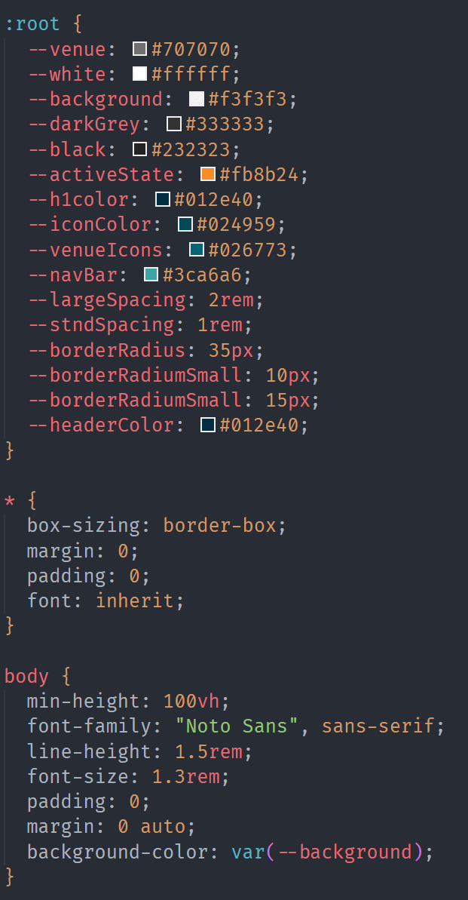
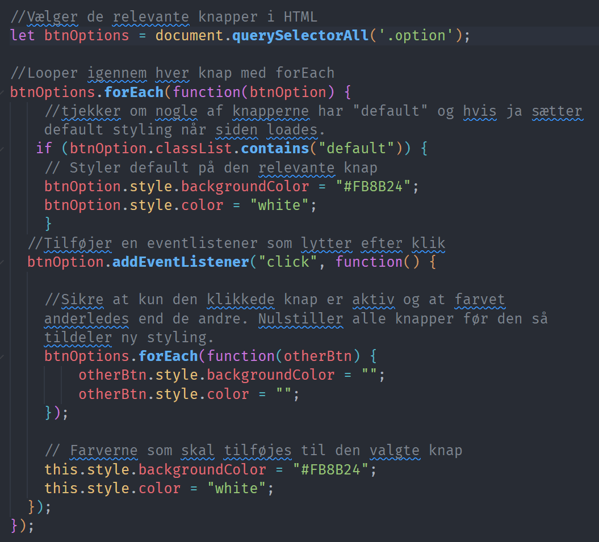

Realisering
Vi implementerer vores løsning via HTML, CSS og JavaScript. Først
sætter vi vores HTML struktur op, og på den måde sikrer at
grænsefladens indhold for den rigtige placering ift.
tilgængelighed. Derefter definerer vi grundlæggende properties i
vores CSS-dokument, bl.a. variabler til farver, margin, padding og
border radius. Det gør vi for at sikre konsistens mellem siderne,
og hvis der eventuelt er ting som skal styles anderledes, er det
nemt at ændre på en gang.

Efter styling, implementerer vi den JavaScript funktionalitet vi
har behov for. I dette projekt udnyttede vi JavaScript til at
tilføje funktionalitet til vores filtrerings knap.

Derudover bruges window.location.href.includes for at de aktuelle
menupunkter er fyldt ud, på den underside man befinder sig på. Det
sidste vi gør, er at validere kode, for at sikre at produktet er
programmeret korrekt og så vidt muligt, efter best practices.
Siden vi udelukkende arbejder med en webapp til mobil, har vi i
første omgang ikke brugt tid på et responsivt design.